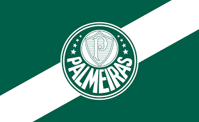

FUTEBOL
Sou um fanático por futebol desde quando era pequeno. Cheguei a jogar nas categorias de base do São Caetano quando tinha meus 10-13 anos de idade.
Acompanho quase todas as ligas internacionais: Premier League, La Liga, Serie A, Ligue 1 e principlamente a UEFA Champions League.
Meu time de coração? Ah essa é fácil demais...pela cor do site já diz...
SEP - Sociedade Esportiva Palmeiras

Acesse o site oficial do Palmeiras aqui:
Palmeiras
{% endblock contents %}